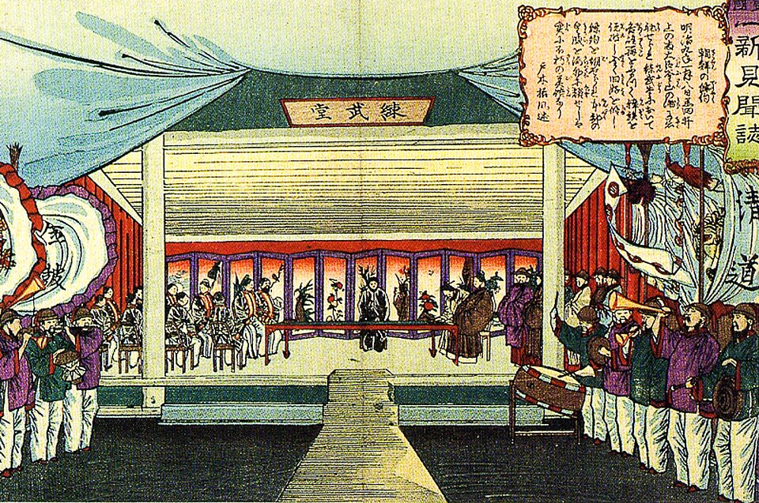
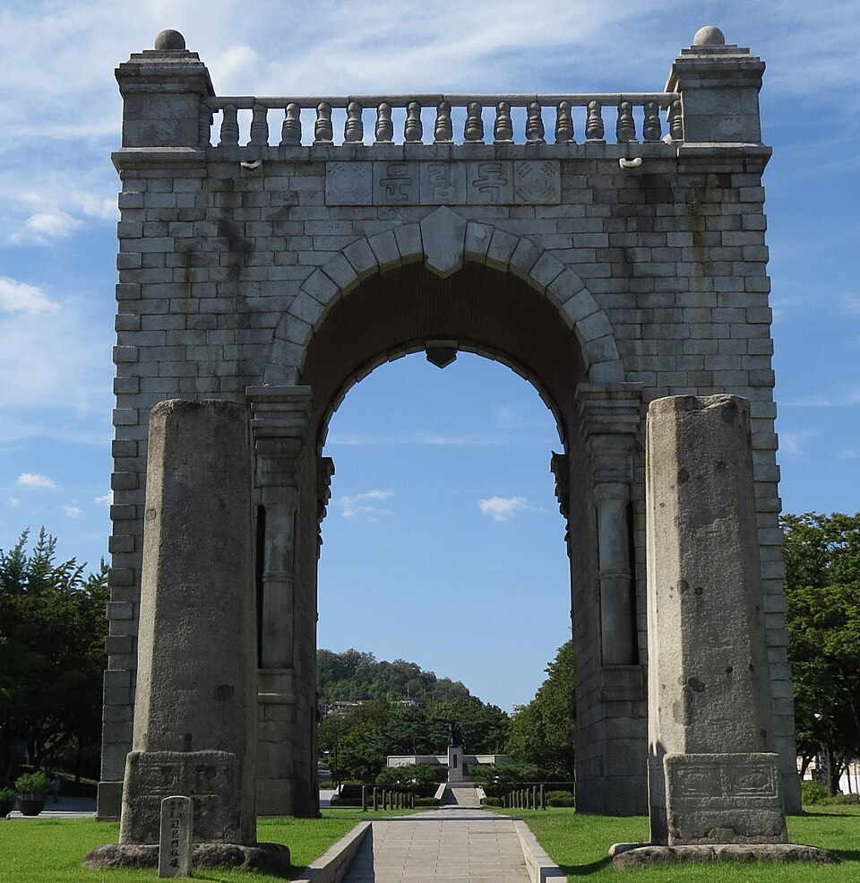
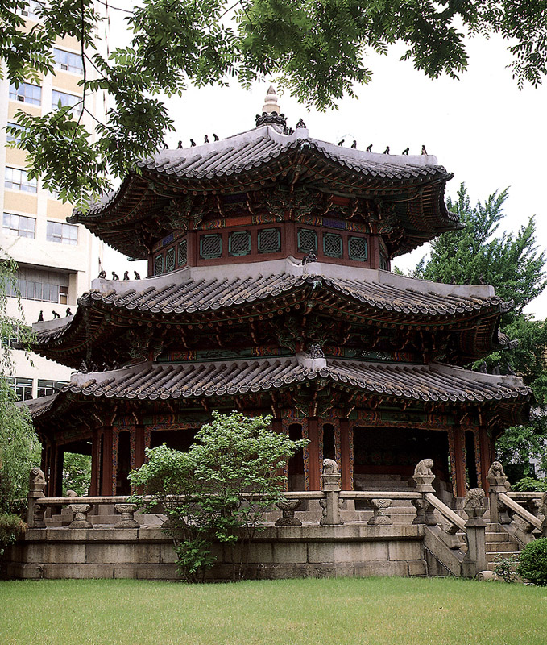
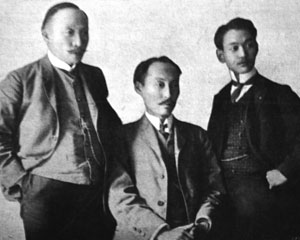

| 구분 | 주도 기구 | 주요 내용 |
|---|---|---|
| 1차 갑오개혁 | 8아문, 재정 일원화, 신분제 폐지, 과부 재가 허용, 과거제 폐지 | |
| 2차 갑오개혁 | 김홍집· 연립내각 | 반포, 8도→23부, 재판소 설치, |
| 을미개혁 | 친일 내각 | 단발령, '' 연호, 태양력, 종두법 |



| 의병 | 계기 | 중심 세력 | 특징 |
|---|---|---|---|
| 을미사변, 단발령 | ·이소응(양반 유생) | 고종의 해산 권고로 대부분 해산 | |
| 을사늑약 | 최익현·민종식, (평민 의병장) | 평민 출신 의병장 등장 | |
| 고종 퇴위, | 해산 군인 합류, (이인영·허위) | 시도, 국제법상 교전단체 자처 |
| 신문 | 연도 | 특징 |
|---|---|---|
| 1883 | 박문국 발행, 최초의 신문, 순한문 관보 성격 | |
| 독립신문 | 1896 | 서재필, 최초의 민간 신문(한글판+영문판) |
| 1898 | 국한문 혼용, 장지연의 '시일야방성대곡' 게재 | |
| 1904 | 양기탁+베델(영국인, 치외법권), 국채보상운동·의병에 호의적 |